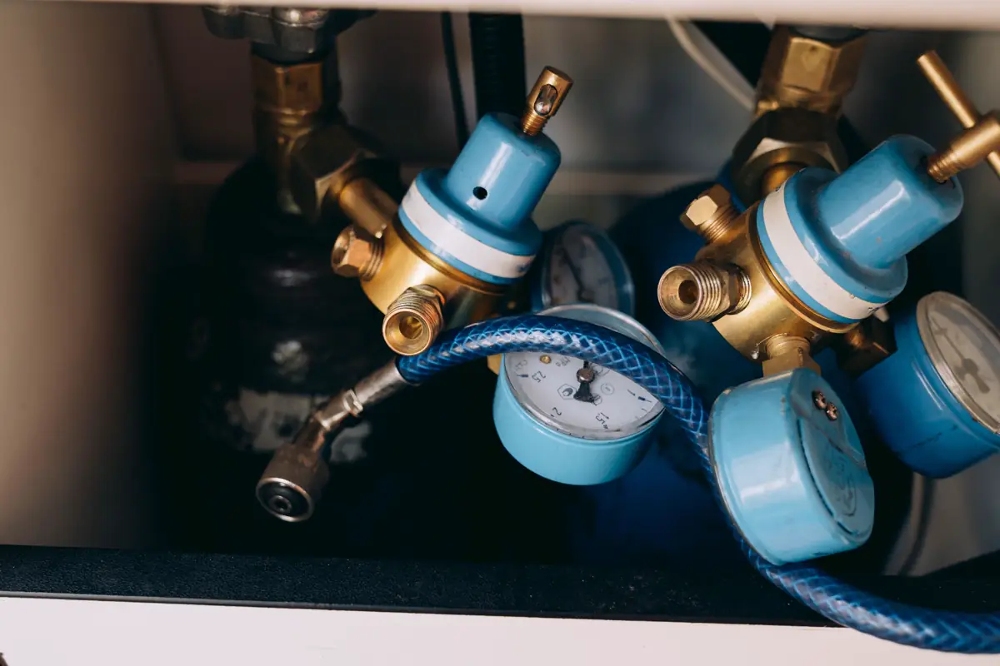
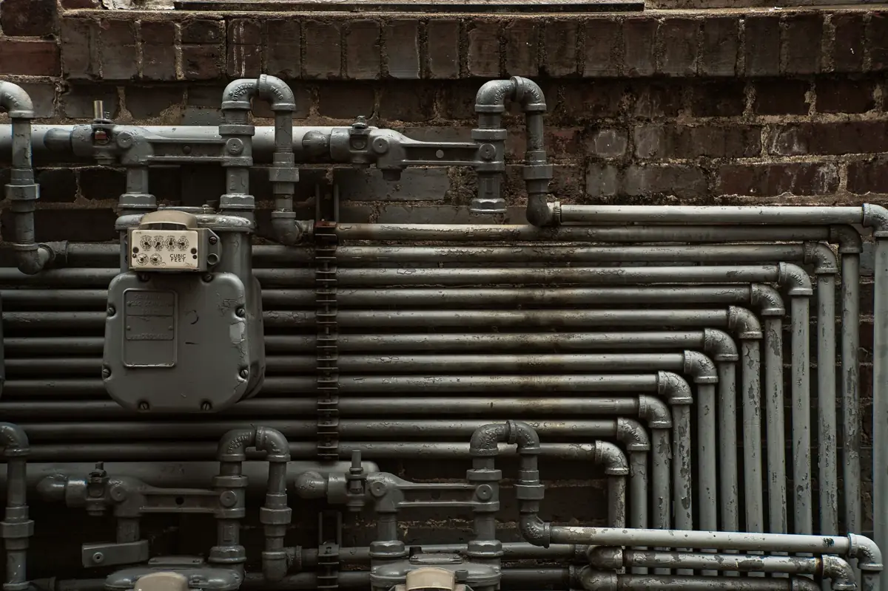

Quem precisa do laudo de estanqueidade
Todo prédio com central de GLP ou rede de gás natural — condomínio residencial, restaurante, hotel, hospital, indústria — precisa comprovar periodicamente que a tubulação não vaza. No Espírito Santo, a norma técnica de gás do Corpo de Bombeiros (NT 18) pede o laudo de estanqueidade com ART na renovação do alvará, em intervalo de no máximo três anos, e anual para ocupações de risco maior, como casas de show, hospitais, postos e depósitos de inflamáveis.
O laudo também é pedido na ligação ou na conversão para o gás natural da distribuidora, depois de reforma que mexeu na rede e sempre que alguém sente cheiro de gás. O responsável técnico precisa estar cadastrado no CBMES para que o documento seja aceito.
Equipe técnica pronta para atender toda a demanda em Vitória, Vila Velha, Serra, Cariacica e região: o orçamento, o agendamento e o acompanhamento ficam centralizados na Axial Engenharia, do primeiro contato à entrega do documento.

Como é o teste
- Inspeção da central e dos abrigos — cilindros ou tanque, ventilação, distâncias, sinalização, extintor e válvulas;
- Isolamento do trecho e fechamento dos pontos de consumo;
- Pressurização da rede com manômetro de precisão, conforme a pressão de ensaio da NBR 15526;
- Tempo de estabilização e leitura — queda de pressão indica vazamento;
- Localização do vazamento com detector e espuma, quando a pressão cai;
- Laudo com resultado por trecho, fotos, recomendações e ART.

Problemas que mais aparecem
| Problema | Onde | Risco |
|---|---|---|
| Rosca e conexão com vedação vencida | Medidores, reguladores, registros | Vazamento lento, cheiro intermitente |
| Tubulação corroída | Trecho aparente em fachada e garagem, na maresia | Perda de espessura e furo |
| Mangueira vencida ou fora de norma | Fogão e aquecedor do apartamento | Ressecamento e ruptura |
| Abrigo sem ventilação | Central de GLP, nicho de medidores | Acúmulo de gás |
| Reforma que embutiu a rede sem teste | Cozinha e área de serviço | Vazamento oculto |
Gás no alvará, na reforma e na cozinha industrial
O laudo de gás é uma das peças do alvará do Corpo de Bombeiros, ao lado do laudo de SPDA e dos testes do sistema de combate a incêndio. Em apartamento, qualquer mudança no ponto de gás entra no plano de reforma da NBR 16280 e termina com novo teste. Em cozinha industrial, a rede de gás convive com a coifa e a exaustão, e as duas precisam estar em ordem na mesma vistoria.
Perguntas frequentes sobre laudo de estanqueidade de gás
De quanto em quanto tempo é preciso fazer o teste de estanqueidade?
No Espírito Santo, a norma de gás do Corpo de Bombeiros pede o laudo com ART em intervalo de no máximo três anos, e anual para ocupações de risco maior, como casas de show, hospitais, postos e depósitos de inflamáveis. Reforma na rede e suspeita de vazamento pedem teste imediato.
Quem pode emitir o laudo de estanqueidade?
Profissional habilitado, com ART registrada no CREA-ES e cadastrado no Corpo de Bombeiros do Espírito Santo, para que o documento seja aceito no licenciamento.
O teste de estanqueidade corta o gás do prédio?
Durante o ensaio, o trecho testado fica sem consumo. O teste é programado com o síndico ou o gestor para o horário de menor impacto, e o fornecimento é restabelecido ao final.
Senti cheiro de gás no condomínio. O que fazer?
Feche o registro geral, não acione interruptores nem aparelhos elétricos, ventile o ambiente e chame o Corpo de Bombeiros pelo 193 se o cheiro for forte. Depois da emergência, o teste de estanqueidade localiza o vazamento e libera a rede.
O laudo serve para a ligação do gás natural?
O teste de estanqueidade com ART faz parte da documentação para ligar ou converter a rede interna. As exigências da distribuidora são conferidas antes do ensaio.
Laudo de gás na Grande Vitória
Teste de estanqueidade em condomínios, restaurantes, hotéis e indústrias:
Renovação do alvará ou cheiro de gás?
Mande o tipo de gás, o número de unidades e a data do último laudo. Retornamos com prazo e valor.